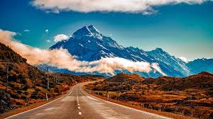
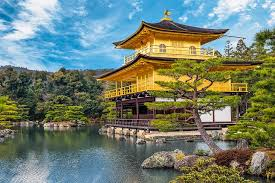

todo_project destinations
Bienvenue sur les îles tropicales
- voici un aperçue des îles
- ces îles aux allures tropicales et chaleur d'été vous feront passer un moment inoubliable
- by © I_L_K group ™
Bienvenue en inde
- L'inde vous ouvre ses portes
- optez pour des paysages qui changeront de votre quotidien et de vos habitudes
- by © I_L_K group ™
Bienvenue en nouvelle zealand
- un aperçu des nombreux paysages qui vous attendent
- en voila un parmis les nombreux que la nouvelle zealand vous propose ici nous avons des plaines à perte de vue
- by © I_L_K group ™
Bienvenue au Japon
- les jardins de kyoto vous donnera une vue a en couper le souffle
- et enfin kinkaku-ji le pavillon d'or sa couleur viens du fait qu'il est fait de feuille d'or avec ses jardins relaxants cest aussi l'un des plus célèbre temple bouddhiste
- kyoto est l'ancienne capitale du japon elle est surnomméela capitale de la paix et la tranquillité
- by © I_L_K group ™